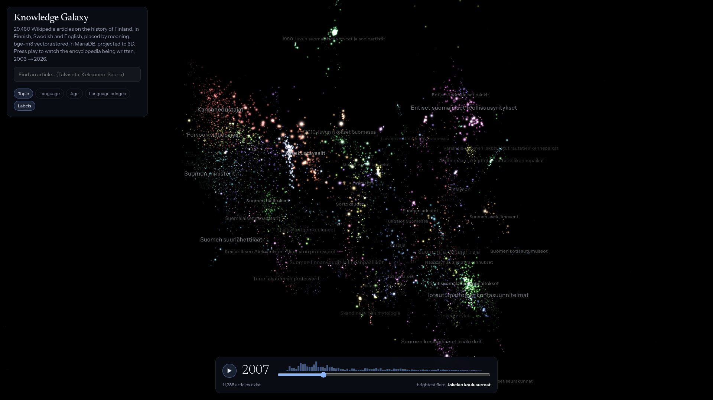
Is every Wikipedia telling the same story — and was it always?
Kielipeili: six Wikipedias scored against the Finnish article, every difference quoted
Ask: what Wikipedia said in any year, cited to the exact version
Both tracks: RAG + system-versioned tables · 862,076 versions · 23 years
Russian readers may not know Mannerheim; English readers need winter explained. That is a fair reason to tell a story differently. Telling the same events with a different slant is not. Today you cannot see either.
“If the Finnish Winter War article is the reference: Swedish 85, English 70, Russian 13.”
What the challenge host asked us for (his illustration, translated): a score per language, with AI judging where the same thing is told differently.
“What did Wikipedia say about this in 2015, and what has changed since?”
The challenge brief's own example. Wikipedia keeps every version, but the history tab is a list of diffs: you cannot search it or cite it.
Reference: Suomen sisällissota, 115k characters = 100. Current versions.
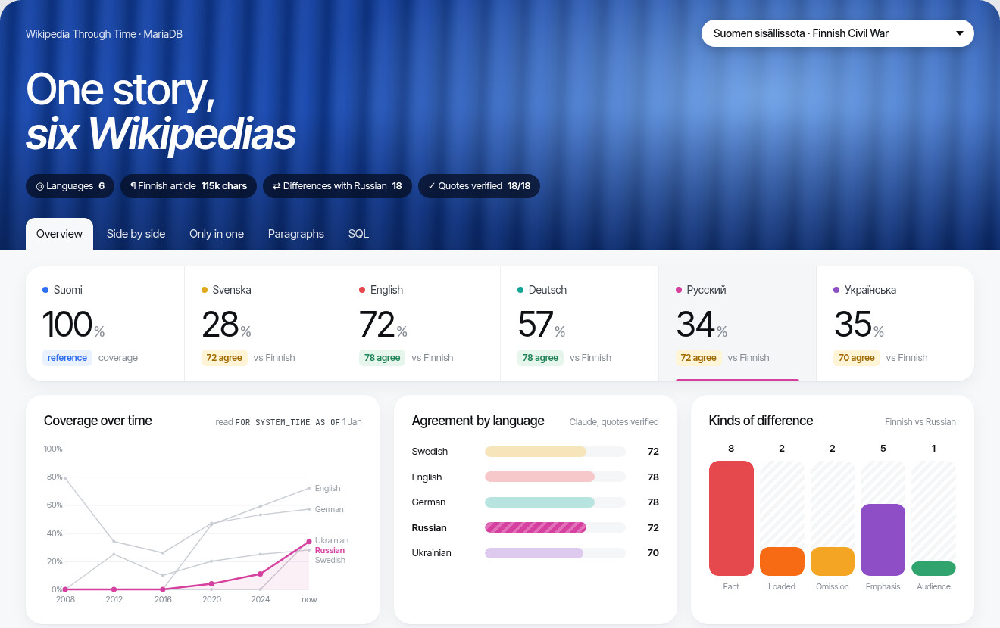
Kielipeili demo: 9 Finnish-history stories in fi · sv · en · de · ru · uk, current versions plus snapshots from 2008, 2012, 2016, 2020 and 2024.
FactFinnish lists France among the first states to recognise Finland; Russian says France refused.
✓ 18/18 differences verified: every quote found word for word in the stored article text
“The Russian article closely follows the Finnish one on terror, prison camps and courts, often with the same figures, but it leaves out almost all of the long-term social and political causes of the war. It puts more weight on outside actors (Stalin and Lenin pushing for revolution, Germany, Britain, Sweden, peace mediators), calls the Red rising a coup and calls the Vaasa senate the ‘legitimate power’, and it contains several mistranslations and number differences.”
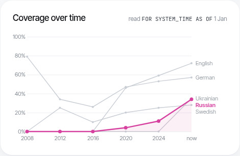
The same statement AS OF 1 January 2008, 2012, 2016, 2020, 2024 and now: Finnish Civil War, Russian in pink.
lens_chunk: every paragraph of every language version, bge-m3 VECTOR(1024) with a VECTOR INDEX.SYSTEM VERSIONED, with each version stored at the moment it was saved on Wikipedia, so AS OF is “what readers saw that day”.“What did Wikipedia say about this in 2015, and what has changed since?” — the challenge brief
“Suomen suhde Natoon” Finland and NATO · as of 1 January 2015 · “…and what changed since”
Finland is a NATO partner that has not applied for membership; public support was 26% (August 2014).
Parliament backed membership 188–8 (17 May 2022), support reached 79% (June 2022), and Finland joined on 4 April 2023.
FOR SYSTEM_TIME AS OF + vector search over 170,300 yearly article vectors. Claude Opus 5.5 answers only from those texts (Citations API). Warm answer 9–11 s, streamed.
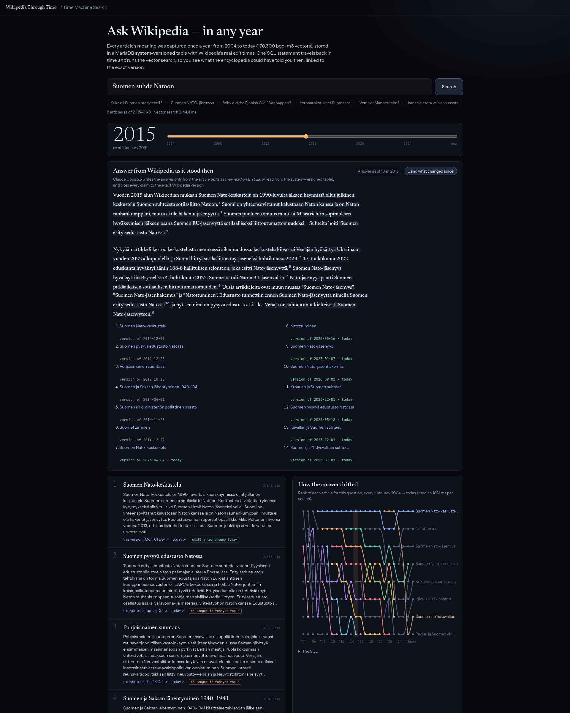
system_versioning_insert_history: row_start = real save timeAS OF = the article as a reader saw it that dayAS OF + VEC_DISTANCE_COSINE = semantic search back thenVECTOR INDEXVECTOR(1024) + VECTOR INDEXAS OF T: nearest paragraph per language → coveragearticle?oldid=5 questions × 5 dates 2006–2026, k = 10, mhnsw_ef_search varied. Latency measured from the laptop, incl. ~100 ms network; exact search alone is ~115 ms on the server.
One HNSW graph spans every version of every year; at any date only 1–12% of rows are valid (2,193 in 2006, 19,742 today), so the AS OF filter throws most candidates away.
Time-travel search uses exact search (IGNORE INDEX): 100% correct. A period-aware vector index, or one graph per PARTITION BY SYSTEM_TIME partition (not supported yet, MDEV-35315), would make it scale. Repro: docs/mariadb-vector-svt-duplicates.md.
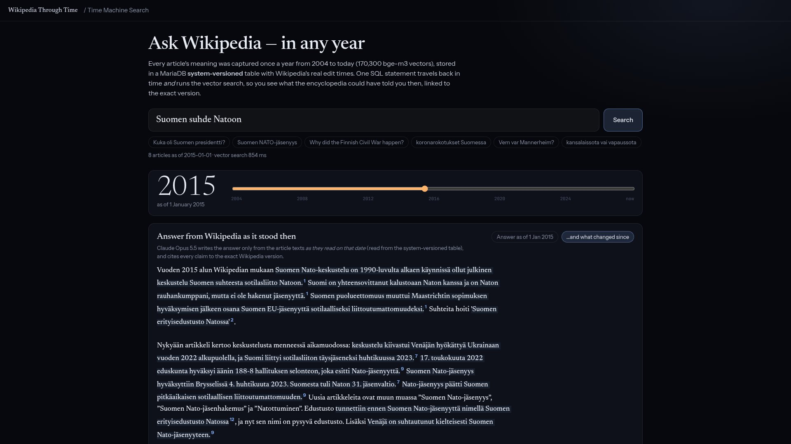
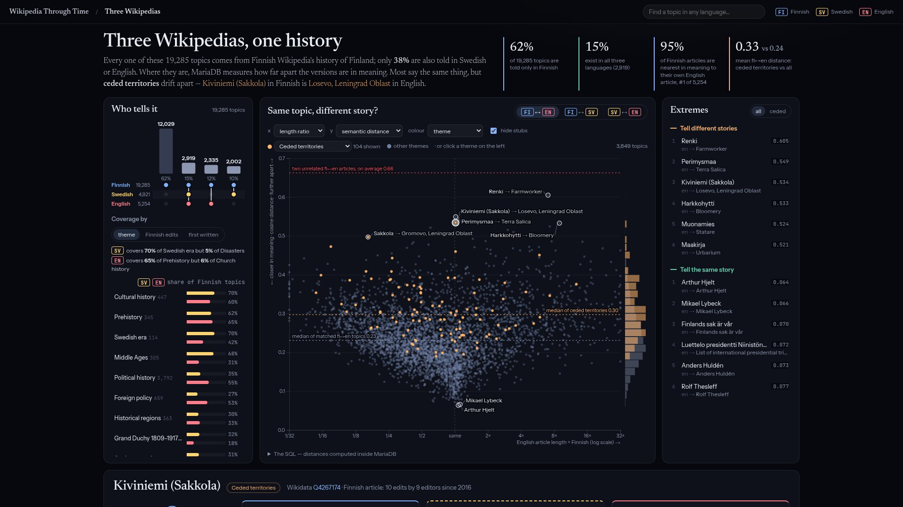
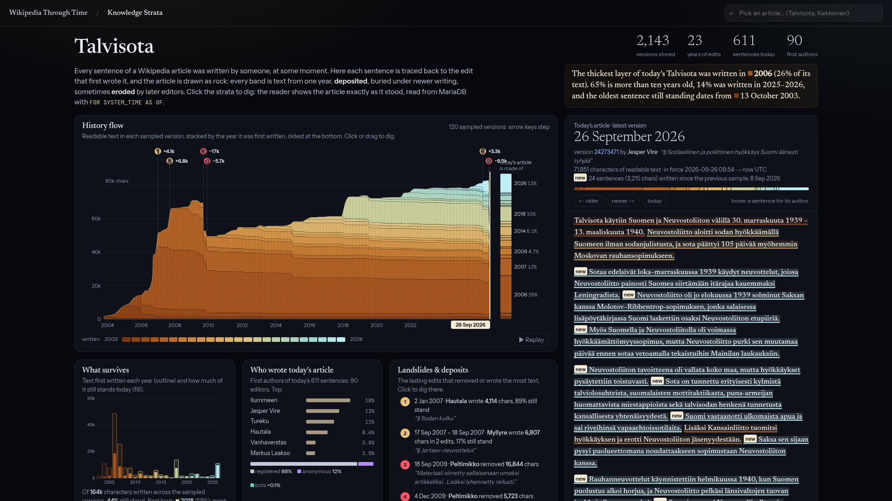
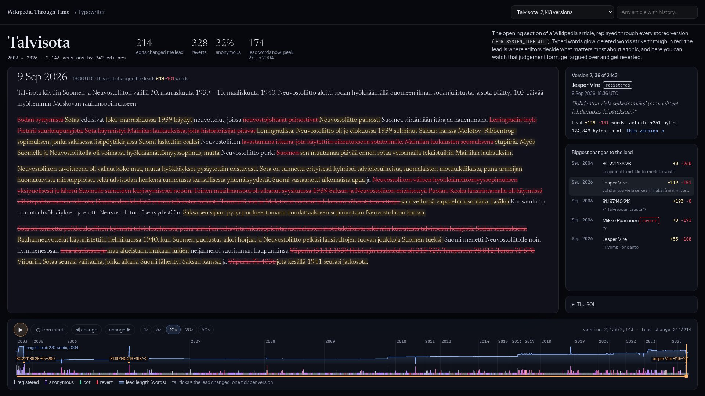
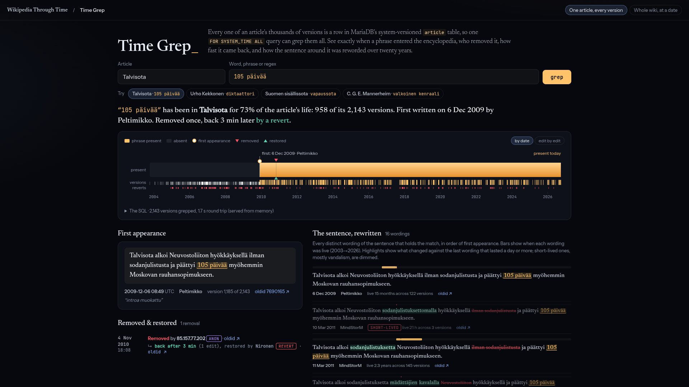
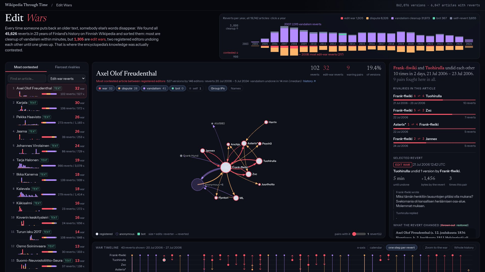
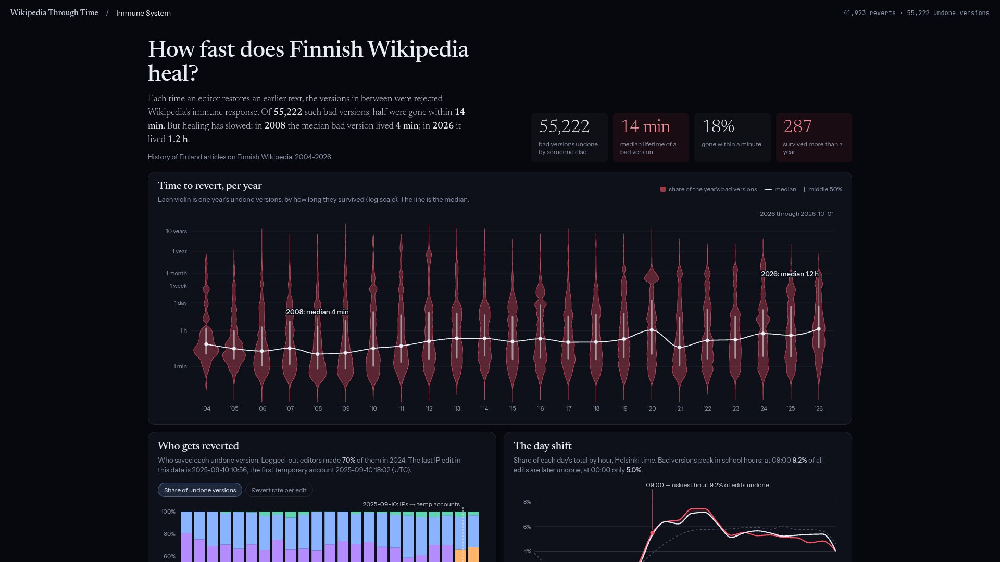
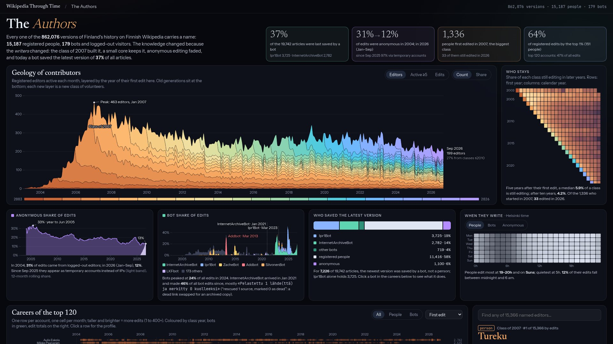
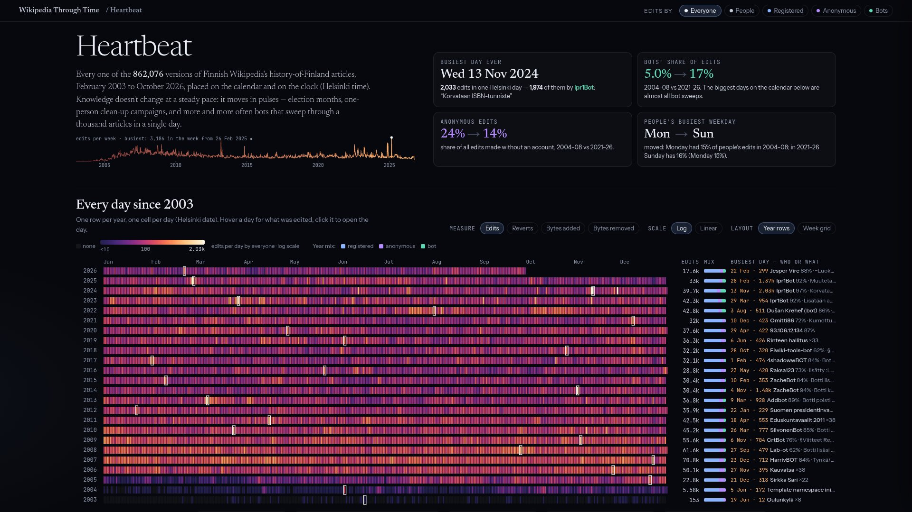
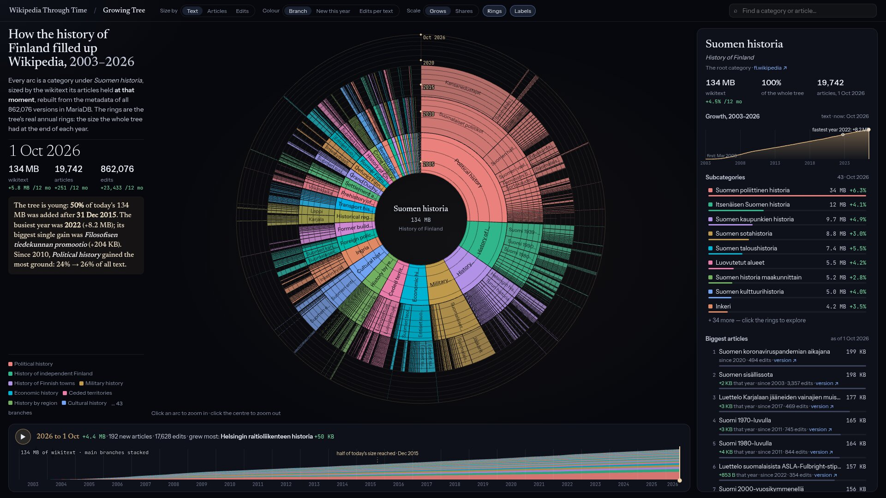
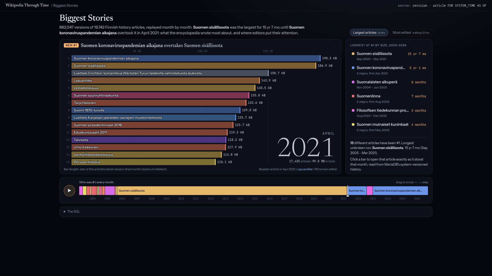
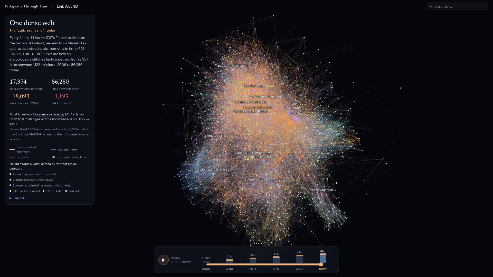
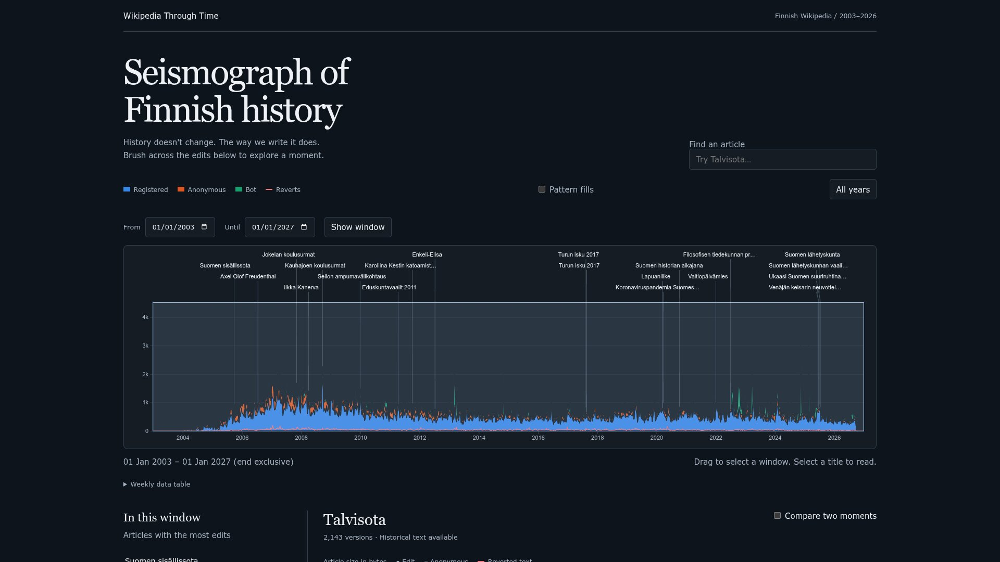
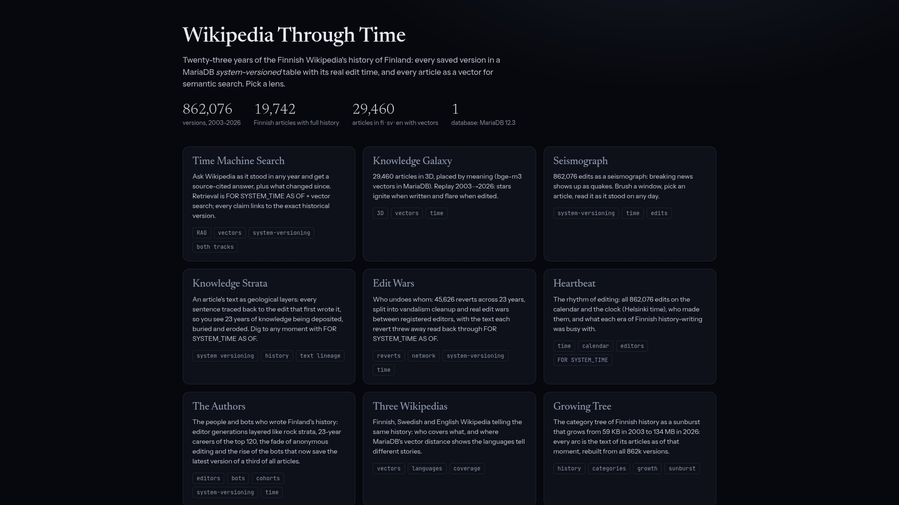
Stack: MariaDB 12.3.3 (system-versioned tables, VECTOR, VEC_DISTANCE_COSINE, window functions, REGEXP_*, FULLTEXT) · Python / Flask + gunicorn · d3 · three.js · bge-m3 (sentence-transformers) · Claude Opus 5.5 + Citations API · Claude pair reviews for Kielipeili
AS OF any year and semantic search of the past are each one statement; window functions find reverts and edit wars.AS OF; semantic search over Wikipedia's past.Bonus: both tracks — RAG and system-versioned tables — in the same features.
Text: Wikipedia contributors, CC BY-SA 4.0. Data: MariaDB Foundation's Wikipedia datasets; other language versions from Wikipedia.